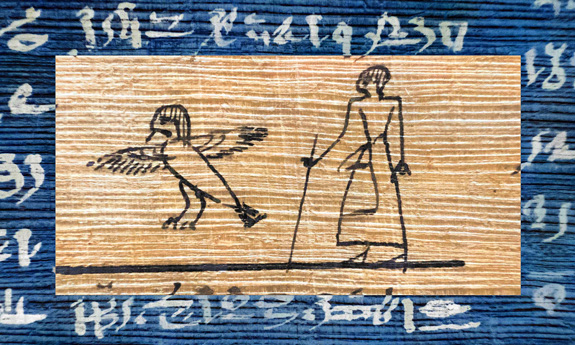
HIERAX
Software for Enhancing the Legibility of Papyri
—
Produced byD-Scribes ProjectUniversity of Basel, Switzerlandhttp://d-scribes.org
Directed byIsabelle Marthot-Santanielloi.marthot-santaniello@unibas.chOfficial webpage
Written byVlad Atanasiu atanasiu@alum.mit.eduLinkedIn
Funded bySwiss National Science Foundation http://www.snf.ch
Contributions byOlivier Calligaro, Faye Gedeon, François Gerardin, Lucas Gericke, Stephan Neitmann, Simon Raith, Ombeline van Rooij, Audric Wannaz: evaluators of the image enhancement methods — Pedro García-Baró, Adam Bülow-Jacobsen, Fatjon Lala, Hussein Mohammed, Johannes Nussbaum, Stephan Unter, Loreleï Vanderheyden, Audric Wannaz, Emanuel Wenger: software evaluators — Phil Harvey, Geoffrey Schivre, and Ben Tordoff: open source code providers.
Online athttps://hierax.ch
—
The purpose of this software is to enhance the legibility of papyri for text edition and publication. It consists of an image processing tool and an image viewer.
HIGHLIGHTS
— Fully automatic image enhancement, which is especially useful for processing image collections.
— Multiple enhancement methods, for covering a variety of document and reproduction qualities, tasks, and subjective preferences.
— Complementary to other software, such as DStretch and Photoshop.
— Open source code.
ENHANCEMENT EXAMPLES
-r-1-original.jpg) Input image Input image |
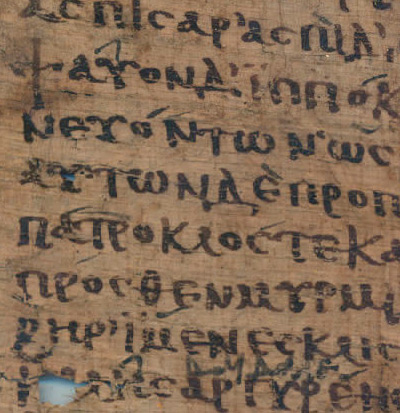Vividness |
| 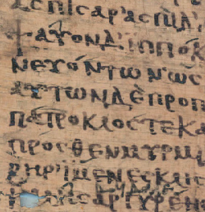LSV |
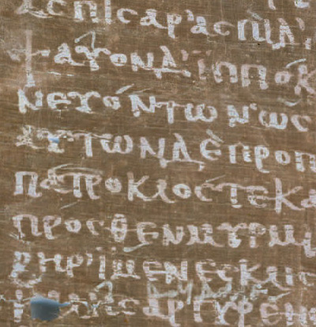Vividness Negative |
| 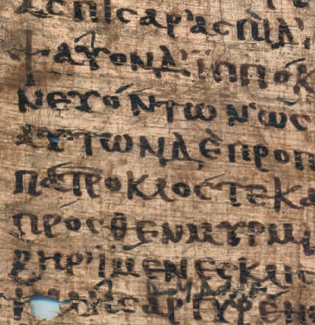Adapthisteq |
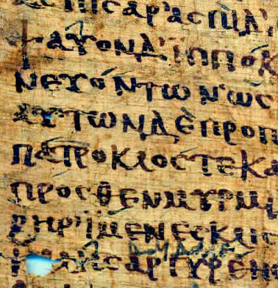Retinex MSRCR-RGB |
| 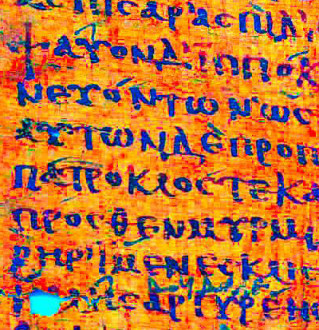Retinex MSR-VAB |
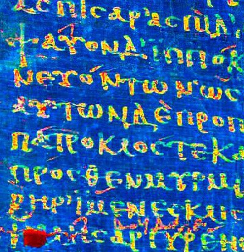Retinex MSR-VAB Blue Negative |
| For comparison, enhacement produced by the DStretch software, with the option LBK. |
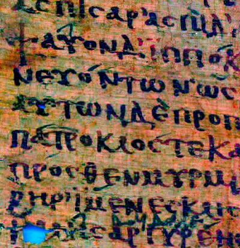 |
|
|
Image credits — PSI XIII 1298 (15a) r1, detail © Istituto Papirologico Vitelli, Florence, by permission.
CONTENTS
ACTIVATE
DOWNLOAD
To dowload the newest Hierax version and consult the newest documentation, please go to https://hierax.ch.
INSTALLATION
After downloading the application and unzipping the file, please read the installation instructions found in the file “installation instructions.txt”. In the folder “help” you find the Hierax manual in file “hierax.html”, which you can display in a web browser. There is also the folder “images”, containing sample papyri images.
BASIC CONCEPTS
The purpose of the software is to enhance the legibility of papyri, a process during which the color appearance of the documents changes, sometimes drastically. This is ok as far as it helps decipherment. But the software is not intended for reproduction fidelity of papyri color and structure.
Being critical about image processing, however, should not stop you from using image processing. Remember that even the “original” image is only a product of physical illumination conditions, camera optics, mechanics, and electronics, software processing, perception, culture, and other factors. Consider, for example, the images in the section “Enhancement Examples” above. Despite their unnatural color, it is the red papyrus and even more the blue papyrus that reveal with most clarity annotation marks in a different ink.
The focus of the software is on the image processing capabilities and less on image viewing. On one hand we want to provide users with a tool that focuses on a single task and on the other hand users have a great variety of ways to view and interact with images, and it would be difficult to satisfy all of them with a single tool.
WORKFLOW
1. Select the desired image processing methods in the Enhance tab of the Hierax user interface. Optionally specify if the images should be saved in TIFF or JPEG format.
2. Click the Select And Enhance Images button to select one or more files from the same directory and start the enhancement process.
3. Hierax saves the enhanced images in the folder “enhanced”, a subdirectory of the directory holding the input files.
4. Overview the enhancements for the first image in the selection list in the Overview tab.
5. Compare two images displayed side by side in the Detail tab. Click the window to activate keyboard interaction, then use the arrow keys to change the displayed images. Zoom, pan, and rotate images by dragging or pinching them.
6. Group images according to your criteria (utility, resemblance, etc.) by changing, in the Overview tab, the order in which images are displayed.
Interface
ENHANCE TAB
Note: The technical aspects of the enhancement methods are explained in detail in a technical article.
1. METHODS
Vividness — Enhances the contrast between script and background without overly accentuating the papyrus texture. Vividness increases the saturation of images, which is why the papyri appear redder. (The term “vividness” designates a dimension of the CIELAB color space.)
LSV (Average of Lightness and Difference of Saturation and Value) — Has good script/background contrast and smoothing of the papyrus texture. Depending on the document and image it might attenuate parts of the script.
Adapthisteq (Adaptive Histogram Equalization) — Enhances the papyrus texture.
Retinex — Emphasizes local differences in color, which might help legibility. Might produce a halo effect, darkening parts of the document. (“Retinex” is a contraction of “retina” and “cortex”, and designates a theory of perceptual color constancy developed by Edwin Land, the inventor of the Polaroid cameras.)
The different retinex variants available in Hierax result in different image quality outcomes and their usefulness is specific to document types. MSRCR-RGB (Multiscale Retinex with Color Restoration on RGB [red, green, and blue] channels) gives the most balanced results for most papyri images. MSR-VAB (MSR on Vividness, CIELAB a* [blueish–yellowish], and CIELAB b* [greenish–redish] dimensions) allows detection of subtle features, such as the presence of annotations in a different ink. The other versions might be useful for specific documents. In general, V (Vividness) methods are more saturated than L (Lightness) versions. — Try them out on ostraca or, as a bonus, on your holydays pictures from your archeological fieldwork weeks.
Note: By default, Hierax applies to each method, in a preprocessing step, two additional enhancements to those mentioned above. Gamut expansion consists in expanding the color gamut from the sRGB IEC61966-2.1 color profile to Adobe RGB (1998), resulting in an increase in chroma (an aspect similar to saturation), which in turn enhances the legibility of the dark, achromatic ink strokes, occurring over the chromatic papyrus background. Maximization of the dynamic range of the lightness channel of images results in an increase of contrast between dark and light image areas.
2. POSTPROCESSING
Note: Each postprocessing option applies an enhancement method on a copy of the set of images enhanced with the methods selected in the Methods section. Therefore, the total number of output images equals that of the selected methods multiplied by the selected postprocesses and one set of not postprocessed images. E.g., if all the thirteen methods and two postprocesses are selected, the result consists in 11 × 2 enhanced images + 11 not-postprocessed enhanced images + 1 original = 34 images.
Negative — Changes the polarity of the lightness. This might be useful to distinguish the boundary between papyrus and support, as well as emphasize ink traces.
Blue Negative — Reveals some image aspects attenuated in the other methods.
Note: Postprocessing produces results only if a processing method has been selected.
3. AUXILIARIES
Red Channel Only — Processes only the red channel of color images. This method can be used only with the Adapthisteq and Retinex enhancement methods. The word “red” is inserted after the file name of the input image when the enhanced file is saved. See the section “Infrared” below for applications of this method.
Mask Background — Masks the background of the papyrus before processing, which might improve the contrast. The term “background” designates here the surface on which the papyrus was placed for being photographed, such as a table. Once the processing completed, the enhanced image and the background are fused, so as to preserve the look of the input image. The artifacts introduced by background masking, typically halos around the physical edges of the papyri as detected by the algorithm, might or might not be noticeable. The mask serves to inspect the quality of masking and is saved as a PNG format file in the subdirectory “enhancement” of the input images directory.
Note: The auxiliary method Mask Background is applied on a copy of all enhanced images, including postprocessed. Thus, selecting background masking multiplies the number of output images by two. You can reduce the number of images to compare by first finding the most useful images among the enhanced ones and then applying an auxiliary processing to see if the result could be further improved.
Light | Dark Background — Specifies the luminance of the background on which the document was photographed (e.g., table). The parameter affects the quality of the mask.
Keep | Remove Shadows — Removes the shadows of the papyrus on the background, if any, before creating the mask. Works for color images only.
Note: Masking makes sense to be applied on papyri images where the background is visible. Similarly, when the shadow thrown by the document on the background is not visible, it’s not useful to deshadow the image. Preprocessing produces results only if a processing method has been selected.
Example of masking for enhancement: The images below demonstrate the impact of masking and deshadowing on enhancing the legibility of a papyrus that makes a shadow over the background. Note the contrast improvement in the third and fourth images, the remnant of the shadow in the third image, its removal in the fourth image, at the price of local degradation and some contrast loss.
| 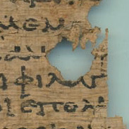Input image |
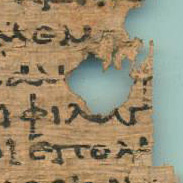Vividness |
| 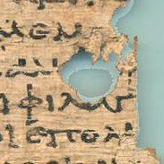Vividness, Masked, Light Background |
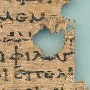Vividness, Masked, Light Background, Deshadowed |
| 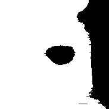Mask with Light Background |
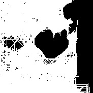Mask with Light Background and Deshadowed |
Image credits: PSI XII 1274 r, detail © Istituto Papirologico Vitelli, Florence, by permission.
Example of masking for segmentation: The mask produced by Hierax can be used for other applications than enhancing legibility: to improve automatic segmentation of papyri fragments occurring in the same image, for example. Below is shown how papyri fragments cast shadows on the background and how the resulting binarization merges physically distinct fragments into a contiguous set of pixels. If the shadows are suppressed, using a color-invariance algorithm, then the binarization results in the correct number of papyri fragments.
| 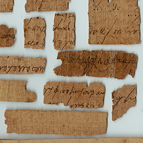Papyri fragments with their shadows |
|
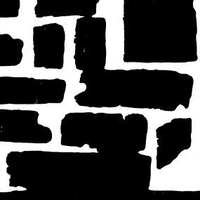Binarization with shadows |
| 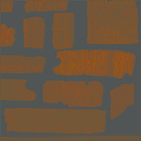Deshadowed image |
|
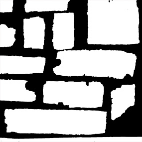Binarization with shadows removed |
Image credits: NU 2015 01218 r, detail © Institut français d’archéologie orientale (Ifao), Cairo; d-scribes project, University of Basel; “Edfou au VIIe siècle” project; by permission.
4. SAVE AS
Specify the output image file format: JPEG and/or TIFF. In the JPEG Quality field you set a value between 1 and 100 for the images saved in the JEPG format.
JPEG produces smaller file sizes, but degrades image quality. This might not be perceptible, but it has an impact if you expect to further process the image. Quality is degraded with each consecutive file save. This lossy behavior does not characterize the TIFF format, although this format can generate very large files.
In conclusion it is strongly recommended that you use JPEG for visual inspection of images and TIFF for further processing and printing.
| 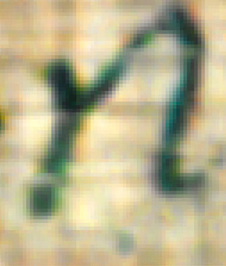TIFF |
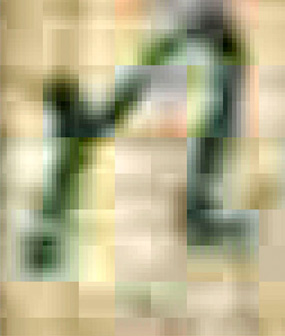JPEG at 10% quality |
| 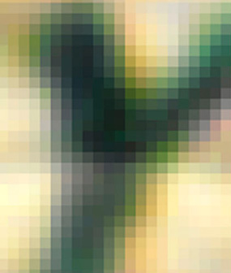Detail of TIFF |
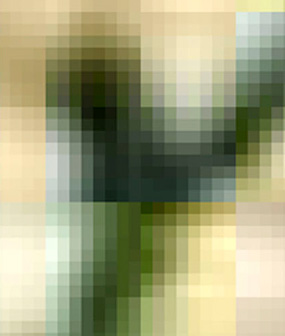Detail of JPEG at 10% quality |
5. PROCESS IMAGES
Select, Enhance, & Save — Select one or more images for enhancement, after which the application will start the enhancement process, then save the results to the subdirectory “enhancement” of the directory from where the images were selected.
Input images — Input files should be three-channel color or single-channel grayscale images. If an input image has two channels, then a zero-valued third channel is added before processing. Multi-channel images are reduced to the first three channels; this includes images with a transparency channel (“alpha” channel, RGBA format; such as may be the case for TIFF images). Three-channel images with identical channel values per pixel are reduced to single-channel images (these images appear to the eye as grayscale images, but contain identical RGB values).
Grayscale images are processed only by the methods adapthisteq, retinex, negative, and mask background. For grayscale images to be processed with the retinex method the choices from the drop-down menu are not taken into account; a default method is applied, MSR-A (achromatic), not listed in the menu.
Supported image formats are BMP, GIF, HDF4, JPEG, JPEG 2000, PBM, PCX, PGM, PNG, PPM, RAS, TIFF, XWD (see details here). The assumed color profile is sRGB IEC 61966-2.1, and the bit depth 8 bit.
Unreadable images are specified in the “log unreadable images.txt”, found in the “enhanced” subfolder of the folder containing the selected input images.
Output images — Output file names contain the file name of the input file and its extension, followed by the name of the enhancement method used to generate the file. For example, the input file “image.jpg” enhanced with the vividness method and save option TIFF is saved as “image_jpg-vividness.tif”.
HELP
Online — Read the online Hierax manual. Its contents concerns the latest Hierax release, and may differ from the user’s software version.
Local — A version of the documentation is shipped with the software, so that the documentation you read concerns your specific software version. To read it, please open in a web browser the file hierax.html, found in the folder help, located where you unzipped the Hierax software file.
OVERVIEW TAB
Provides an overview of all enhancement methods applied to the first image selected by the user in the Enhancement tab. The original is the first image of the first row.
Save Overview — Saves a copy of the overview image in the same directory, named “enhancement”, as the enhanced images. If the overview images result from the user having clicked the “Load Images” button, then they are saved in the subdirectory “enhancement” of the directory where the loaded images are located. The images are saved in the formats specified in the Save As panel of the Enhance tab.
View Images — Load images in the viewer without enhancing them.
Information & Selection — Click the overview image to display a datatip specifying the label of the image tile that was clicked. The label is either the names of the enhancement methods, if the mosaic is obtained from an enhancement process, or the image file name, if the images were uploaded. The clicked image becomes the active image in the right hand panel of the Detail tab.
DETAIL TAB
Allows side-by-side, synchronous comparison of all applied enhancement methods. Lets you zoom, pan, and rotate images, as well as change the order in which images are displayed.
1. INTERACTION
You can use gestures, the mouse, and the keyboard to interact with the images.
Note: The software reaction time to user inputs decreases with increasing image size. Use images saved with higher JPEG compression levels to increase interaction speed or segment the images into several files. In case images vanish during panning, press the arrow-keys to make them reappear.
Zoom — Press the zoom button to activate the zoom functionality, and then click on an image to zoom into it. Press Shift while clicking to zoom out. Double click to reset the zoom level. Use the up and down arrow keys to zoom in and out, while the zoom is active.
Note: There are two other interaction modalities, but they both are discouraged. Drag a rectangle over the image to zoom a selected area. Pinch with two fingers the image to zoom in and out.
Pan — Press the pan button to activate the pan interaction, then drag with two fingers the image or use the arrow keys to move the image. You can reset the view by double clicking the image.
Rotate — Press the rotate button to activate image rotation, then use the left and right arrow keys to rotate the image. Flip the images upside-down with the up and down arrow keys.
Reset — Press the reset button to reset the image view to its original state. If any of the tools are active, you can achieve the same result by double clicking the image.
Next — With the left and right arrows you scroll up and down through images on the left and with the up and down arrows through the images on the right.
Full screen — Double-click the window top-bar or press the maximize button on the left side of the bar to get into full screen modus. Double tap with two fingers one of the images to enlarge it to the window size.
2. ORDER
You can change the order in which the images appear in the Overview and Detail tabs. For example, group most useful images at the top of the list.
To Top, Up, Down, To Bottom — Move individual images up and down the virtual image stack and in the dropdown lists.
Sequential — Group all basic methods together (Vividness, LSV, Adapathisteq, Retinex), followed by the basic methods combined with each of the postprocessing methods in turn (Negative, Blue Negative), and finally followed by combinations with the auxiliary methods. This functionality is not available when images were uploaded via the Overview tab.
Interleaved — Interleave basic methods with postprocessing and auxiliary methods. This functionality is not available when images were uploaded via the Overview tab.
| 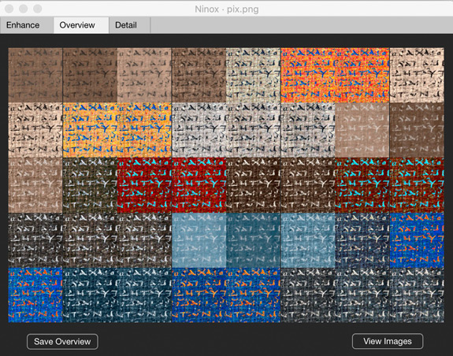Sequential Image Order |
|
Interleaved Image Order |
Usage
TIPS
Process images with all available methods. The quality of enhancement changes with document and image quality; each method can reveal different features for different uses; users have different preferences about which methods to use.
If you wish to compare more than two different images run two instances of Hierax.
You can cancel the enhancement process by pressing the “×” button on the waitbar.
If the output images are not looking right, e.g., all black or all white, it might have to do with the image format. Try to save it in another format, reduce the bit depth to 8 bit, or check that there are no layers in the TIFF files.
If you whish to convert to grayscale an RGB image taken in visible light, then (for best results) convert the image to the perceptual color space L*a*b* in an image editing software, and then save the L* (lightness) channel alone to a grayscale image. Make sure the output image contains a single channel, instead of three (in which case the image may appear gray, but the numerical values for the same pixel may be different between the red, green, and blue channels, and thus, the image becomes unwittingly quasi-achromatic).
IMAGE QUALITY
Improve the legibility of images by maximizing the brightness of your display and adjusting the contrast. Also, calibrate the display. On Mac, for example, use the Display Calibrator Assistant accessed from System Preferences > Display > Color > Calibrate. To calibrate the display on Windows do: click the Window icon in the status bar > Expand the menu icon > Settings > Display > Extended Display Options > Color Management > Color Management > Extended > Calibrate Display.
Further improvements may result by changing the color profile of your display. We suggest to choose sRGB IEC61966-2.1, or any other profile that increases the saturation of the papyrus, without distorting too much its color appearance. — To change the color profiles on Mac, go to Mac Preferences > Display > Color. To set the color profile on Windows do: click the Window icon in the status bar > Expand the menu icon > Settings > Display > Extended Display Options > Color Management > Color Management > Devices > check Use Custom Settings for this Device > Add > select a color profile > OK > Use As Standard Profile.
Simulated appearance of papyrus on a display with sRGB IEC61966-2.1 color profile (left) and Adobe RGB (1998) (right). The left-hand image appears more contrasted.
You might diminish the visibility of papyrus fibers and gaps between them by rotating the image by 45° or any angle that make these features diagonal in respect to the observer.
CROPPING
Enhancement quality might be improved by cropping the image to retain only the papyrus, in case other artifacts are present (and masking cannot remove them). Below is shown an example of enhancing an infrared image with the retinex method, before and after cropping.
| 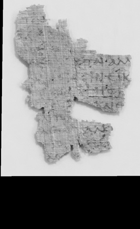Infrared image |
|
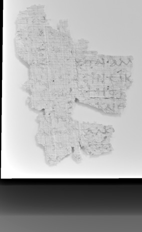Infrared image enhanced with the retinex MSR-A method |
| 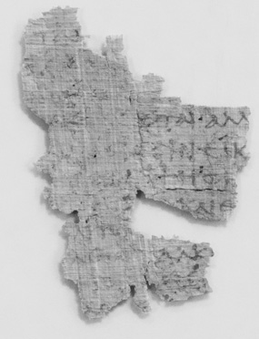Cropped infrared image |
|
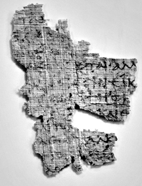Cropped infrared image enhanced with the retinex MSR-A method |
Image credits — P.Bas. inv 27, University of Basel Library, infrared photo by Peter Fornaro.
COMPARISON WITH DSTRETCH
DStretch is an image enhancement software developed by Jon Harman for improving the legibility of petroglyphs drawn with color pigments. DStretch has also become a widely used by papyrologists. Hierax and DStretch are, however, complementary tools: the former is best suited for enhancing texts written on papyri, as well as monochrome texts on ostraca, while the latter gives excellent results with multicolored documents.
The figures below illustrate some of the differences. These are due to the goals of the mathematical methods used in the respective software: to preserve naturalness, reduce background noise, and uniformize contrast in the case of Hierax, and increase the distinctiveness of entities defined by different colors in the case of DStretch.
|
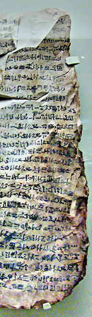 |
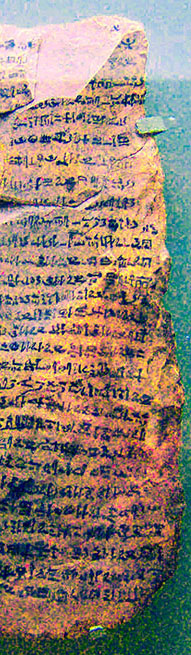 |
| Left: input image; middle: Retinex MSRCR-RGB; right: DStretch LBK. Note how Retinex uniformizes the contrast, while DStretch generates heavy chromatic noise. |
|
| 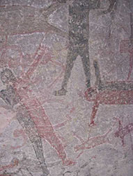 |
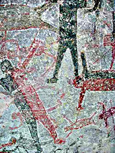 |
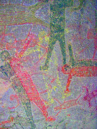 |
| Left: input image; middle: Retinex MSRCR-RGB; right: DStretch cov-Yuv. Retinex fails to enhance the middle human shape, while DStretch achieves excellent discriminance between the shapes painted with various pigments. |
Image credits — Top: Wikimedia Commons contributor; bottom: Jon Harman
INFRARED
It is possible to use Hierax to enhance infrared images, not only images taken in visible light. If the output of the infrared camera is a single-channel grayscale image, then use retinex for enhancement (the MSR-A method, not visible in the list, will be selected automatically for grayscale images when the retinex option is selected). More usually the camera output will be a three-channel color image, in which case it may be best to convert it to grayscale by selecting the Red Channel Only option from the Enhance tab, and then process it in Hierax with retinex.
Comparisons of different enhancement methods are presented below. It can be seen that (at least for documents of this types of ink and substrate), enhancing the red channel alone is equivalent to or superior to more sophisticated methods.
For more information on infrared photography for papyrology see Adam Bülow-Jacobsen (2008), “Infra-red Photography of Ostraca and Papyri”, Zeitschrift für Papyrologie und Epigraphik, 165: 175–185; and Gregory Bearman and William A. Christens-Barry (2009), “Spectral Imaging of Ostraca”, Palarch’s Journal of Archaeology of Egypt/Egyptology, 6 (7): 1-20.
| 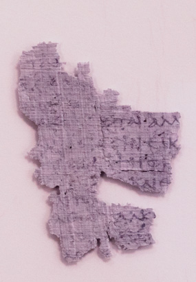Infrared three-channel image |
|
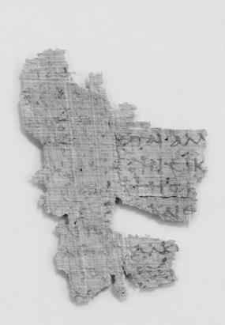Red channel |
| Manual level adjustment of the red channel |
|
Retinex MSR-A of the red channel |
| First PCA component of three-channel image |
|
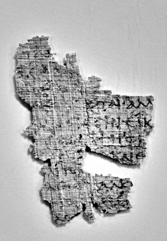Wavelets max-mean fusion of three-channel image |
| 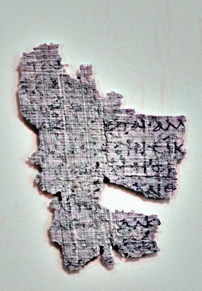Retinex MSRCR-RGB of three-channel image |
|
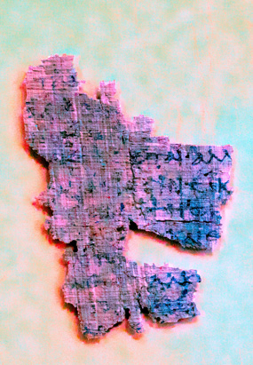DStretch LAB of three-channel image |
Image credits — P.Bas. inv 27, University of Basel Library, infrared photo by Peter Fornaro.
BINARIZATION
A secondary application of Hierax is to enhance images in support of image processing and machine vision. For example, you can enhance images with Hierax, and then binarize them with other software. The images below illustrate how different enhancement methods produce different binarization results. The same “subjectivity” has been observed in the heterogenous preferences of human participants in the user study conducted to evaluate the Hierax methods.
|
|
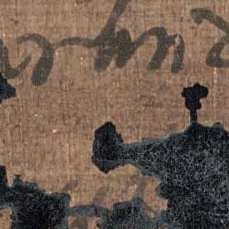 |
|
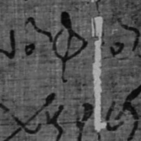 |
| 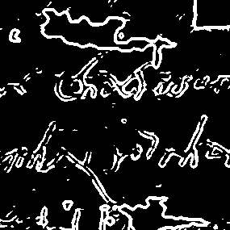 |
|
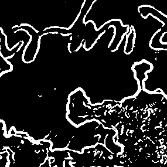 |
|
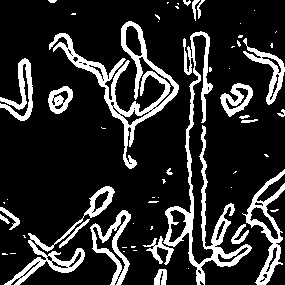 |
| 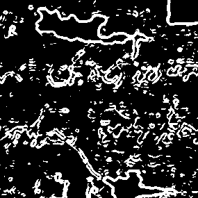 |
|
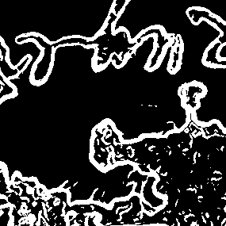 |
|
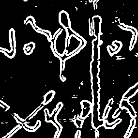 |
| 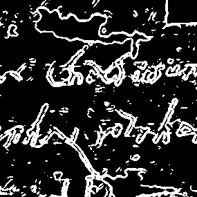 |
|
|
|
|
| 1st row: input image; 2nd row: binarization of the input image enhanced with the vividness method; 3rd row: binarization of lsv; 4th row: binarization of retinex MSRCR-RGB. — Best binarizations: 1st column: vividness (2nd row); 2nd column: lsv (3rd row); 3rd column: retinex (4th row). |
Image credits — The Bank of Papyrus Images of Byzantine Aphrodite BIPAb.
BEST METHODS
If all basic, postprocessing, and auxiliary enhancement methods are selected, the output is about 66 images, which makes their appraisal impractical. Which ones to chose?
As a basic rule several enhanced images should be considered for use, since they vary with document and reproduction quality, provide different insights, and are appropriate for different user behaviors and tasks. While some general predictions may be made about which images to chose, selection is best done on a case-by-case basis.
Vividness is a top choice, since it changes the least the original image, while improving legibility.
LSV is to be provided only if it does not introduces visible distortions.
Adapthisteq has been found to be preferred by some users, given that it is a method that enhances the physical structure of the papyrus (= fibers and gaps). This is useful for the analysis of papyrus production and quality.
At least one of the Retinex enhanced images may be provided by default, since it equalized very well dark and light papyrus areas and differentiates by hue between different inks and between stains and papyrus. Usually this is the MSRCR-RGB method, an all-purpose enhancement.
Negative and Blue Negative should also be default methods, since they were ranked higher than other by users participating in an evaluation study. In particular MSRCR-RGB Blue Negative has often better legibility than the positive contrast. MSR-L Negative produces strong script–background contrast and attenuates ink variation; as a consequence, the method is useful to read longer texts, as opposed to carefully deciphering of characters.
Red Channel Only should be used for three-channel infrared images, as usually it improves legibility. It may also be useful for reproduction of objects with strong red hue (such as ostraca).
Images obtained with Mask Background should be provided to users only if they really improve legibility. Don’t forget to select the appropriate option between Light Background and Dark Background, depending on the luminance of the surface on which the papyrus was photographed.
Remove Shadows makes sense only if the papyrus generates a shadow on the supporting surface.
If masking is applied, then the mask image generated by Hierax should always be provided, to make any issues explicit.
CASE STUDY
As a practical example, we mention the enhancement methods adopted for the 70 papyri (106 images) of the Library of the University of Basel, Switzerland, for its forthcoming online papyri catalog. The selection of enhancement methods was done . . .
- — by a single selector,
- — for their usefulness,
- — based on a case-by-case analysis among all possible combinations,
- — on a sample of 23 papyri,
- — according to some enhancement characteristics (e.g., enhance script legibility, attenuate papyrus structure, attenuate smudges, increase distinctiveness between inks),
- — for a variety of most likely tasks (e.g., scholarly transcription, paleography, use of papyri for illustrative purposes),
- — for which they might be used by the potential users of the online catalog (e.g., expert papyrologists, students, general public).
Beyond the non-enhanced image, the selected enhancement methods are, in order of utility: MSRCR-RGB, Vividness, MSRCR-RGB Blue Negative, MSR-L Negative.
It is important to stress that this choice might not apply to other papyri. A particularity of this collection, which affects the choice of enhancement methods, is that the physical documents are in a good state of preservation and the digital reproductions are of excellent quality. Also, the method ranking results from the fact that an automated solution was sought, due to the large number of images and limited resources. Otherwise, there was a marked heterogeneity in respect to which methods are most useful for a specific document image and task. This is illustrated by the spread of dots in the following picture, where the rows correspond to methods and the columns to documents, organized by tasks, while the dots mark optimal method/task combinations.
SAMPLE IMAGES
The folder images of the Hierax ZIP file contains sample papyri images. Please consider the copyrights in the hierax_images_copyrights.txt file.
TROUBLESHOOTING
If the file [Program Files|Applications]/Hierax/application/hierax_settings.json in the /Hierax/application/ folder gets corrupted, delete it.
Large images might vanish during panning using the mouse or the trackpad. To make them reappear, pan using the arrow-keys.
REFERENCES
The technical aspects of the image processing methods used in Hierax and their evaluation through a user experiment are described in the following paper: Vlad Atanasiu, Isabelle Marthot-Santaniello, “Legibility Enhancement of Papyri Using Color Processing and Visual Illusions: A Case Study in Critical Vision”, International Journal on Document Analysis and Recognition (IJDAR), accepted for publication.
IDENTITY
The software name, Hierax, means “hawk” or “falcon” in Ancient Greek (ἱέραξ), and refers to several Egyptian deities, the most famous ones being Horus and Ra. The “Eye of Horus”, wadjet, is an ancient symbol of protection, linked with the idea of action, since the word irt means both “eye” and “one who does”. It has therefore been chosen for this software that aims to offer “active vision”.
The falcon drawing on the Hierax interface is the “hwr” hieroglyph (Gardiner G5, Unicode U+13143, from the New Gardiner font by Mark-Jan Nederhof).
The papyrus logo a the very top of this page represents a falcon guiding a human. (Credits: “Nesim's Book of the Dead”, c. 1000 BCE, Egypt; Cantonal Museum of Archaeology and History, Lausanne, Switzerland; photo by Vlad Atanasiu.)
UPDATES
2021.03.30
— Code updated to Matlab 2021a.
2021.01.29
— Link from interface to website.
— Documentation updates.
2020.12.21
— Handle multi-channel images.
— Record unreadable images.
View more updates ...
2020.12.17
— Hierax website opens.
— Name change from Ninox to Hierax.
2020.12.10
— Improved layout of interface objects.
— Enhancement of only the red channel of an image.
— Minor performance and interface updates.
— Extended the documentation.
2020.11.22
— Added timer.
— Extended the documentation.
2020.11.07
— Improved user interface readability.
— Extended the documentation.
2020.11.03
— First public release.
— Programmed in Matlab 9.9 (R2020b), Update 1.
2020.10.14
— Improved interaction with the images.
2020.10.11
— Improved interaction with the images.
2020.10.06
— Added option to change the display order of images.
— Added image rotate tool.
— Replaced interaction tools hovering over image to static toolbar.
— Now each option in the Auxiliaries tab creates a new set of images.
— Now the overview can be saved.
— Added option to set JPEG quality.
— Improved interaction with the images.
— Improved interface readability.
— Improved the documentation.
— Removed various bugs.
2020.07.01
— Creation